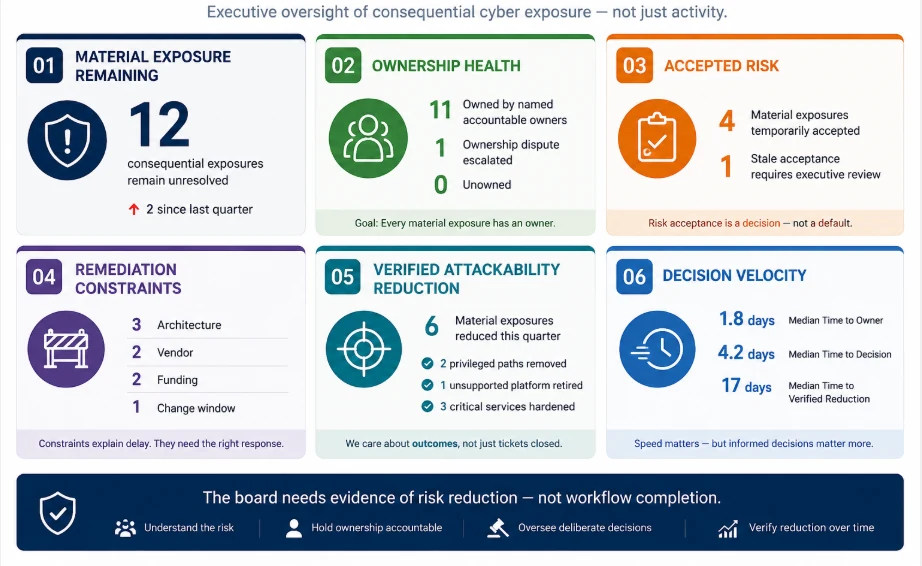
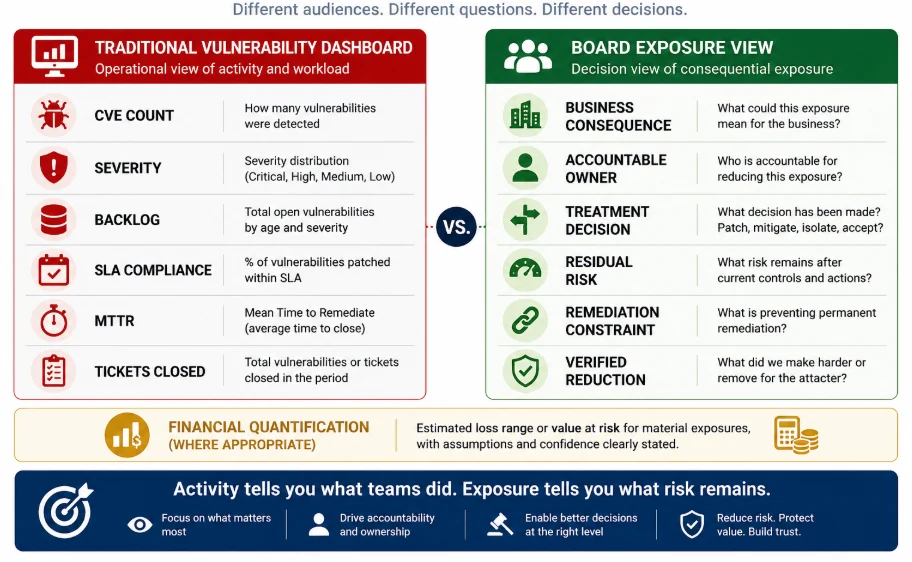

Why vulnerability reporting should show consequential exposure, ownership, accepted risk, remediation constraints, and verified reduction — not just CVE counts and SLA percentages.
I have sat through enough security reviews to know the pattern.
The slide comes up.
18,462 vulnerabilities open.
96% of Critical vulnerabilities patched within SLA.
42 Critical vulnerabilities overdue.
11% improvement month over month.
Most of the boxes are green.
There is usually one amber indicator somewhere to prove we are not pretending everything is perfect.
The numbers may be completely accurate.
The team may genuinely have worked hard.
And I still find myself wanting to ask one uncomfortable question:
Are we actually safer?
Not:
Did we close more tickets?
Not:
Did the SLA improve?
Not even:
Did the Critical backlog decline?
I mean:
Is the enterprise carrying less consequential cyber exposure than it was before?
That is surprisingly difficult to answer from many vulnerability dashboards.
We have become very good at reporting what the vulnerability-management machinery is doing.
We are less consistent at showing what risk remains after all that machinery has run.
And that distinction matters even more once the audience is the board.
Boards do not need a better scanner report
I would not expect a board director to understand the nuances between vulnerability scanners.
I would not expect them to debate individual CVEs.
And I certainly would not want a board meeting turning into a discussion about whether a finding should have been scored 8.8 or 9.1.
That is not their job.
Their job is oversight.
NIST CSF 2.0 makes this explicit through the GOVERN function, tying cybersecurity to organizational context, roles, authorities, risk strategy, policy, and oversight. [1]
NIST SP 800-39 makes the same broader point from another direction: information-security risk has to be managed across the organization, mission and business processes, and systems — not left inside a technical function. [2]
Board-focused research reaches a similar conclusion. Clinton argues that boards should treat cybersecurity as enterprise risk rather than as an IT problem and should expect management to present risk in forms that support actual governance decisions. [3]
That sounds obvious.
In practice, it is where many reports still struggle.
The board does not need another export from the scanner.
It needs enough information to judge whether management:
understands the important exposures,
knows who owns them,
has made deliberate decisions,
knows what risk is being carried,
and can show whether the situation is improving.
That is a very different standard.
The board does not need evidence that Security is busy. It needs evidence that the enterprise is making good exposure decisions.
The problem often starts with what we count
Vulnerabilities are wonderfully countable.
Exposure is not.
That is part of the problem.
Imagine one application has 500 vulnerabilities.
Another has one.
Which worries me more?
I cannot answer from those numbers.
I need to know:
Is it internet-facing?
Is exploitation active?
What privileges are involved?
What can the attacker reach from there?
What business service depends on it?
What controls stand in the way?
What happens if those controls fail?
That is why I keep coming back to the same proposition throughout this series:
The job is not to manage vulnerabilities. The job is to manage exploitable business exposure.
CVSS is useful. I use it.
But CVSS v4.0 itself distinguishes Base characteristics from Threat and Environmental considerations. [4]
EPSS gives us another signal by estimating the probability of exploitation in the wild. [5]
CISA's Known Exploited Vulnerabilities catalog gives us something different again: evidence that exploitation has actually occurred. [6]
And recent academic work continues to explore how multiple signals can be combined more intelligently.
Shimizu and Hashimoto's vulnerability-management chaining work is one example, combining different risk signals rather than treating severity as the whole answer. [7]
Lopes, Moura, and Marinheiro approach the problem from context-aware prioritization and automated mitigation in heterogeneous environments. [8]
All useful.
But I would not put any of those feeds directly in front of the board.
The board does not need more signals.
Management needs to turn those signals into an answer to a much simpler question:
Which exposures could materially hurt us?
A green SLA can hide red risk
Here is a scenario I think many security leaders will recognize.
Team A patches 98% of its Critical vulnerabilities inside SLA.
Excellent result.
The dashboard is green.
But the remaining 2% includes:
an internet-facing identity service,
an unsupported customer platform,
and a privileged route toward critical infrastructure.
Team B has dozens of Critical and High vulnerabilities outside SLA.
That looks worse.
But those systems are internal, strongly segmented, not reachable through meaningful attacker paths, and associated with low-consequence services.
Which team is actually carrying more risk?
The SLA dashboard may tell me:
Team B.
The exposure picture may tell me:
Team A.
That is not an argument against SLAs.
We need them.
They create discipline.
But I would be very careful about allowing an operational metric to become a proxy for risk.
Because:
Severity is not threat. Threat is not exposure. Exposure is not business impact.
And a green operational measure can coexist with a very uncomfortable risk picture.
So what would I actually show the board?
I would keep it small.
Six signals.
Not sixty metrics.
Not because six is magically correct.
Because once the board dashboard starts looking like the vulnerability team’s operations console, we have probably lost the plot.
1. Material Exposure Remaining
This is the number I would put first.
Not:
18,462 vulnerabilities open
but:
12 consequential exposures remain unresolved.
Now we have a conversation.
What do I mean by consequential?
Something that could credibly create meaningful:
customer impact,
revenue loss,
operational disruption,
safety consequence,
regulatory impact,
data compromise,
or strategic damage.
The shift seems small.
It is not.
“Why do we still have 18,000 vulnerabilities?” is largely an inventory-management question.
“Why do we still have these 12 exposures?” is a management question.
2. Ownership Health
Article 5 was really about one frustration I have seen repeatedly:
a vulnerability is visible to everybody and owned by nobody.
Security knows about it.
Engineering knows about it.
Product knows about it.
Operations knows about it.
Three meetings later, everyone is still waiting for someone else to move.
That is why I made the point:
A vulnerability without an accountable owner is not being managed. It is being observed.
The board does not need a list of 500 application owners.
But it should know whether material exposures actually have accountability.
I would show:
how many have a named owner,
how many have disputed ownership,
how many have no valid owner,
and:
Time to Assigned Owner
Here is why that matters.
Suppose a Critical exposure takes 24 days to move into remediation.
The dashboard says:
24 days open.
But then we look closer.
Twenty-one of those days were spent trying to decide whose problem it was.
That is not primarily a patching problem.
That is the organization telling us something about itself.
And I want leadership to see it.
3. Accepted Risk
Then there is the category every mature program eventually has to deal with:
we know about the exposure.
We understand it.
And we are consciously choosing not to eliminate it today.
That can be legitimate.
Maybe the patch creates unacceptable operational risk.
Maybe the vendor has not delivered a fix.
Maybe we have a strong compensating control.
Maybe the platform is already scheduled for retirement.
The problem is not risk acceptance.
The problem is when nobody remembers why the risk was accepted in the first place.
Article 4 introduced what I called Risk-Acceptance Half-Life.
I do not mean it as a mathematical formula.
It is a governance lens.
The older the acceptance, the more evidence I want that the assumptions behind it are still true.
Because the environment keeps moving.
Threat activity changes.
Architecture changes.
Controls degrade.
The business becomes more dependent on the system.
Ownership moves.
A fix becomes available.
So I would never want the board to hear simply:
“Risk accepted.”
I would rather hear:
“We are consciously carrying this exposure until this date, under these assumptions, with these controls, owned by this person, while this permanent treatment is completed.”
Now I know there was an actual decision.
4. Remediation Constraints
This one matters because “we are late” tells me almost nothing.
I want to know:
Why are we late?
Is it engineering capacity?
A vendor?
A change-window restriction?
Architecture debt?
Unsupported technology?
Funding?
Product lifecycle?
A safety requirement?
A dependency we cannot remove yet?
Those are not interchangeable explanations.
And they do not require the same leadership response.
Ten exposures blocked by vendor dependency?
That is starting to look like a third-party strategy issue.
Ten blocked by unsupported technology?
Lifecycle debt.
Ten blocked by funding?
That is a capital-allocation conversation.
Ten blocked by change windows?
Now we may be talking about operational resilience.
This is one reason I like the line:
A remediation backlog is often an organizational map disguised as a security metric.
Sometimes the backlog tells us more about how the company makes decisions than it tells us about vulnerabilities.
5. Verified Attackability Reduction
This is the question I wish appeared more often in executive reporting:
What did we actually make harder for the attacker?
Did we remove internet reachability?
Did we eliminate a privileged attack path?
Did we retire an unsupported platform?
Did we disable an unnecessary vulnerable service?
Did we reduce privilege?
Did we segment a critical environment?
Did we remove a known exploited condition?
Did we actually test the compensating control we are relying on?
I care about tickets.
But only because tickets should eventually lead to outcomes.
Article 3 made this distinction:
Patch is an intervention. Risk reduction is the outcome.
If we patched 2,000 vulnerabilities and a consequential attack path remains viable, I want to know.
If we patched only 200 but removed three major paths into critical systems, I want to know that too.
The board should see what changed in the attacker’s world.
Not just what changed in ServiceNow.
6. Decision Velocity
Most vulnerability programs measure Time to Remediate.
Useful.
But it compresses several different problems into one number.
I would break the journey apart:
FIND → OWN → DECIDE → ACT → VERIFY
How long did it take to establish ownership?
How long did the owner take to make a treatment decision?
How long until the action happened?
How long until somebody verified the exposure actually fell?
Those are different clocks.
And they diagnose different problems.
If Time to Owner is high:
we probably have an accountability problem.
If Time to Decision is high:
we may have unclear governance.
If Time to Action is high:
we may have a capacity or operational problem.
If Time to Verification is high:
we may be closing work faster than we are validating results.
That is what I mean by:
Decision Velocity
I am not arguing for speed at any cost.
A bad decision made quickly is still a bad decision.
But I am very interested in how long material exposure sits in the spaces between decisions.
Because that is where risk often quietly ages.

The board needs evidence of risk reduction — not workflow completion.
This is where the series comes together for me
When I started this series, I was not trying to invent another vulnerability-management framework.
I was trying to answer a more practical frustration:
Why can organizations have excellent tools, hardworking teams, mature processes — and still struggle to remove the exposures that matter most?
Article 1 introduced:
FIND → OWN → DECIDE → ACT → VERIFY
Article 2 asked what deserves priority.
Article 3 asked what intervention makes sense.
Article 4 looked at when temporary risk acceptance becomes stale.
Article 5 looked at ownership.
This article is really the executive test of all five.
Can leadership see whether those decisions are working?
That is why I would not build the board dashboard from the scanner upward.
I would build it from the:
business-risk question downward.
Operational metrics still matter
I want to be clear about this because it is easy to take the argument too far.
I am not suggesting we stop measuring:
SLA,
MTTR,
aging,
backlog,
scanner coverage,
patch completion,
or vulnerability count.
Teams need those metrics.
I would expect my vulnerability-management leaders to know them.
But there is a difference between:
Operating Metrics
and:
Oversight Metrics
Operating metrics help teams run the machine.
Oversight metrics help executives determine whether the machine is producing the outcome we care about.
Those two audiences should not necessarily receive the same dashboard.
And as reporting moves upward in the organization, I think it should become more contextual, not merely shorter.
I would demote one familiar headline
This one:
Total vulnerabilities open
I would still track it.
I just would not lead with it.
Because vulnerability count can go up for some very good reasons.
We acquire a company.
Suddenly thousands of previously invisible assets are under management.
Cloud coverage improves.
Authenticated scanning expands.
We introduce better SAST and SCA.
AI finds weaknesses we simply could not see before.
The count goes up.
Did security get worse?
Maybe.
But maybe visibility improved.
The reverse can happen too.
The backlog shrinks dramatically.
Everybody celebrates.
But three highly consequential exposures remain untouched.
So:
More findings can mean better discovery. Fewer findings can mean better security. The count alone cannot tell us which happened.
And then there is concentration
This is another thing raw counts hide.
Imagine ten accepted exposures.
Each one looks manageable individually.
But all ten touch the same identity platform.
Or the same payment environment.
Or one acquired business.
Or the same privileged management plane.
At the ticket level, each decision may appear reasonable.
At the portfolio level, we may have just created a concentration problem.
That is why I would also want to know:
Where is unresolved or accepted exposure accumulating?
By business unit?
Platform?
Supplier?
Attack path?
Critical service?
Concentration is where a collection of individually reasonable decisions can become a systemic problem.
What about putting cyber risk into dollars?
This is where I think the conversation gets more interesting.
There is a well-established school of thought that says boards already make decisions in financial terms, so cyber risk should be translated into the same language.
FAIR — Factor Analysis of Information Risk — is probably the best-known example. It models risk using factors such as probable loss-event frequency and loss magnitude, allowing cyber scenarios to be expressed as financial ranges. [9]
I understand the attraction.
If I am choosing between:
a $5 million platform replacement,
a $1 million compensating-control program,
insurance,
or accepting the exposure,
financial quantification can make the trade-off much more concrete.
I would absolutely use it where the data and decision justify it.
But I have one reservation.
Not about quantification.
About false precision.
If we genuinely understand:
event frequency,
control effectiveness,
loss ranges,
business dependencies,
and uncertainty,
then quantification can improve the conversation materially.
But if those inputs are fragile, turning them into:
“$4.73 million annualized cyber loss”
does not magically make the uncertainty disappear.
It can simply make an uncertain conclusion look more authoritative.
So my position is not:
Do not quantify cyber risk.
It is:
Quantify where the evidence supports it — and quantify the uncertainty too.
Research on board cyber governance and cyber-risk assessment is increasingly interested in this broader translation problem: moving from technical risk toward decision-relevant organizational and economic information. [3][10]
For me, the best answer is not either/or.
A good board conversation might say:
“This exposure affects a revenue-critical identity service, is externally reachable, and our modelling suggests a loss range of X to Y under these assumptions.”
That is useful.
It preserves the technical reality.
It gives the business consequence.
And it does not hide the assumptions.
The point is translation, not monetization
What I really care about is whether Security can translate technical exposure into information that allows another executive to make a decision.
That may involve money.
It may involve:
customer disruption,
operational resilience,
safety,
regulatory exposure,
strategic dependency,
or reputation.
The board should understand:
What could happen?
How plausible is it?
What part of the business is affected?
Who owns it?
What have we decided to do?
What remains afterward?
What could cause us to change that decision?
That is the translation layer.
Technical exposure has to become decision information.
What I would actually put on one board slide
If I had only one slide, I would want something like this:
MATERIAL EXPOSURE
12 consequential exposures remain
↑ 2 since last quarter
OWNERSHIP
11 of 12 have named accountable owners
1 ownership dispute escalated
ACCEPTED RISK
4 material exposures temporarily accepted
1 stale acceptance requires executive review
CONSTRAINTS
3 architecture
2 vendor
2 funding
1 change window
VERIFIED REDUCTION
6 material exposures reduced this quarter
2 privileged paths removed
1 unsupported platform retired
DECISION VELOCITY
Median Time to Owner: 1.8 days
Median Time to Decision: 4.2 days
Median Time to Verified Reduction: 17 days
And if our quantification capability is mature enough:
FINANCIAL EXPOSURE
Estimated loss ranges for the top material scenarios
with the assumptions and confidence level visible.
I would rather have that conversation than spend ten minutes debating whether 96% SLA compliance should be green or amber.

What I would keep out of the board pack
I have seen board packs become impressive-looking and less useful at the same time.
More heat maps.
More red, amber, green.
More trend arrows.
More metrics.
More pages.
At some point the board is receiving a security operations review with the word “Board” on the title slide.
I would resist that.
A director should be able to look at the cyber-risk view and ask:
What are we worried about?
Who owns it?
What are we doing about it?
What are we consciously carrying?
What is stopping us?
Is it getting better?
If the dashboard cannot support those questions, I would question what the dashboard is actually for.
AI will make this harder, not easier
AI-assisted discovery is likely to increase the number of vulnerabilities we can find.
Automation will improve prioritization.
Context-aware systems will get better at connecting vulnerabilities with architecture, threat activity, and possible mitigation. [8]
That is good.
But it creates an uncomfortable paradox.
We may become capable of finding vastly more weaknesses while making it harder for leadership to understand what actually matters.
So I do not want AI simply creating:
more findings,
more scores,
more charts,
and longer reports.
I want it helping us answer:
What changed materially?
Which attack paths became viable?
Which exposure increased in consequence?
Which accepted-risk assumption became stale?
Which intervention removed the most meaningful risk?
Where is exposure concentrating?
Which important exposures still have no owner?
Which blockers require an executive decision?
That is where AI starts becoming useful to governance rather than just useful to discovery.
The five-question board test
If every vulnerability dashboard disappeared tomorrow, could management still answer these five questions?
1. What are our most consequential cyber exposures?
Not the highest CVSS scores.
The scenarios capable of materially affecting the enterprise.
2. Who owns each one?
A name.
Not a queue.
3. What decision has been made?
Patch?
Mitigate?
Break the path?
Isolate?
Replace?
Temporarily accept?
4. What residual risk are we consciously carrying?
And for how long?
Where appropriate, what is the credible financial range?
5. What evidence tells us the exposure is actually reducing?
Not:
“Ticket closed.”
Evidence.
If management cannot answer those questions, I do not think the board has a reporting problem.
It has a:
governance problem.
What I would ask the CISO
I would not start with:
“Why are 4% of Critical vulnerabilities outside SLA?”
I would ask:
Which of those actually matter?
Why are they still exposed?
Who owns them?
What decision has been made?
What are we relying on until permanent remediation?
Have those controls actually been tested?
What investment would permanently remove the recurring exposure?
And the one question I think often reveals more than the dashboard:
Where are we unable to reduce known exposure because authority, accountability, incentives, architecture, or investment are misaligned?
That is the conversation I would want.
Because by that point we are no longer discussing scanner performance.
We are discussing how the enterprise makes risk decisions.
My position
A mature vulnerability-management program should become increasingly boring at the operational level.
That is a compliment.
Routine vulnerabilities should be discovered, routed, patched, verified, and closed without needing senior-management attention.
The difficult conversations should move upward.
Toward:
material exposure,
architecture debt,
ownership failures,
accepted risk,
investment decisions,
operational trade-offs,
concentration,
and evidence that attackability is actually falling.
That is the transition from:
vulnerability management
to:
exposure governance.
The board should not need to ask:
“How many vulnerabilities did Security close?”
I would rather it ask:
“How much consequential exposure remains, why does it remain, who owns it, and what evidence tells us it is reducing?”
Management should be able to answer that clearly.
Because:
A board dashboard that proves Security is busy is not enough. It should prove the enterprise is reducing consequential exposure.
Monday-morning takeaway
Try this once.
Take the ten exposures you believe matter most.
For thirty minutes, ignore the scanner dashboard.
For each exposure, write down:
Exposure
Business consequence
Owner
Decision
Residual risk
Blocker
Verification
And, where the evidence supports it:
credible financial-loss range
Then put those ten rows in front of your leadership team.
Ask one question:
Does this tell us more about the risk we are actually carrying than the dashboard we normally review?
If the answer is yes, I would not blame the scanner.
The scanner was doing its job.
Our reporting model was asking it to answer the wrong question.
Next in the series
Security Debt Is Not Just Technical Debt
Some cyber exposure exists because remediation is genuinely difficult.
Some exists because yesterday's decision was deferred.
Then deferred again.
Unsupported platforms.
Repeated exceptions.
Temporary controls that quietly became permanent.
Inherited architecture.
Identity shortcuts.
Modernization plans that never quite reached the top of the funding list.
The next article will look at Exposure Debt — how unresolved cyber exposure accumulates through yesterday's deferred decisions, and what that debt eventually costs the organization.
References
[1] National Institute of Standards and Technology. (2024). The NIST Cybersecurity Framework (CSF) 2.0. https://www.nist.gov/cyberframework
[2] Joint Task Force Transformation Initiative. (2011). Managing Information Security Risk: Organization, Mission, and Information System View. NIST Special Publication 800-39. https://csrc.nist.gov/pubs/sp/800/39/final
[3] Clinton, L. (2021). “International Principles for Boards of Directors and Cyber Security.” Cyber Security: A Peer-Reviewed Journal, 4(3). https://www.ingentaconnect.com/content/hsp/jcs/2021/00000004/00000003/art00006
[4] FIRST. Common Vulnerability Scoring System Version 4.0. https://www.first.org/cvss/v4.0/
[5] FIRST. Exploit Prediction Scoring System (EPSS). https://www.first.org/epss/
[6] Cybersecurity and Infrastructure Security Agency. Known Exploited Vulnerabilities Catalog. https://www.cisa.gov/known-exploited-vulnerabilities-catalog
[7] Shimizu, N., & Hashimoto, M. (2026). “Vulnerability Management Chaining: An Integrated Framework for Efficient Cybersecurity Risk Prioritization.” IEEE Access, 14, 31407–31424. https://ieeexplore.ieee.org/abstract/document/11397608/
[8] Lopes, R., Moura, J., & Marinheiro, R. N. (2026). “Orchestrated Vulnerability Management for Heterogeneous Networks: Adaptive Two-Stage Vulnerability Assessment, Context-Aware Risk Prioritization, and Automated Mitigation.” arXiv:2608.08162. https://arxiv.org/abs/2608.08162
[9] The Open Group. Open FAIR™ Risk Analysis Standard / Factor Analysis of Information Risk. https://www.opengroup.org/openfair
[10] Srivastava, P., & Mukhopadhyay, A. (2026). “Cyber-risk assessment and mitigation framework for critical information infrastructure: mixed-methods approach.” Journal of Enterprise Information Management. https://www.emerald.com/jeim/article-abstract/doi/10.1108/JEIM-04-2026-0618/1391816